DESCRIPTIVE STATISTICS
Partials Torrance
#> # A tibble: 10 × 10
#> skim_type var mean sd p0 p25 p50 p75 p100 hist
#> <chr> <chr> <dbl> <dbl> <dbl> <dbl> <dbl> <dbl> <dbl> <chr>
#> 1 numeric orig1 5 0 5 5 5 5 5 ▁▁▇▁▁
#> 2 numeric elab1 2.11 1.43 0 1 2 3 6 ▇▇▅▃▁
#> 3 numeric orig2 33.2 11.3 8 23 37 41 50 ▂▃▂▇▅
#> 4 numeric flui2 8.24 2.19 3 7 9 10 10 ▂▁▂▂▇
#> 5 numeric elab2 6.92 4.90 0 3 7 10 18 ▇▃▃▃▂
#> 6 numeric flex2 7.11 1.94 3 6 7 8 10 ▃▁▇▆▆
#> 7 numeric orig3 32.9 16.5 4 20 32 41 69 ▃▇▇▂▂
#> 8 numeric flui3 7.11 2.44 2 6 7 9 11 ▂▃▇▃▅
#> 9 numeric elab3 4.89 3.68 0 2 4 7 13 ▇▇▃▃▂
#> 10 numeric flex3 6.24 3.11 2 4 6 8 14 ▆▇▃▂▂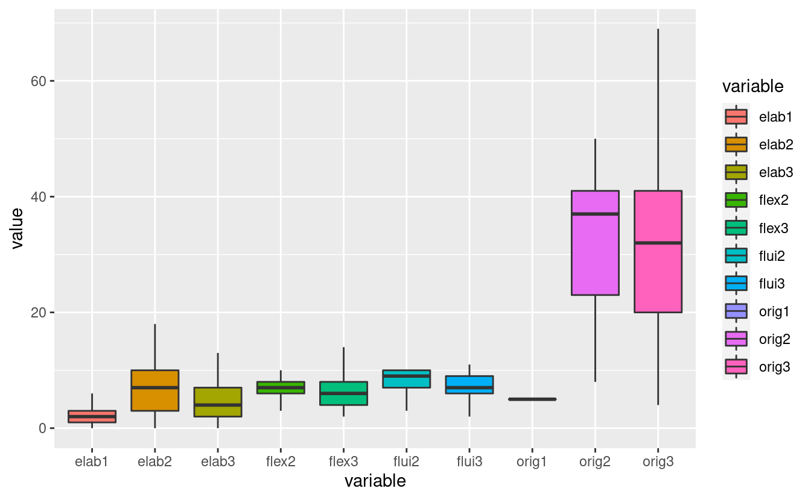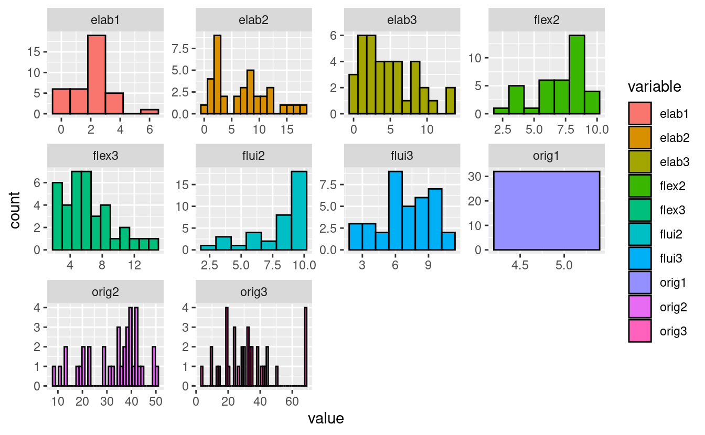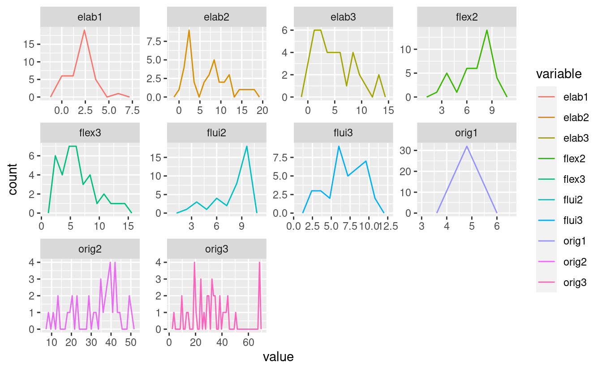
Percentile Torrance
#> # A tibble: 5 × 10
#> skim_type var mean sd p0 p25 p50 p75 p100 hist
#> <chr> <chr> <dbl> <dbl> <dbl> <dbl> <dbl> <dbl> <dbl> <chr>
#> 1 numeric perc_originalidad 64.9 21.8 13 51 71 78.2 98 ▁▂▃▇▂
#> 2 numeric perc_elaboracion 77.3 23.2 19 61 90 98 99 ▁▂▂▁▇
#> 3 numeric perc_fluidez 60.2 22.7 9 43 62 81 98 ▁▇▇▃▇
#> 4 numeric perc_flexibilidad 50.8 22.9 6 41.2 51 62.8 91 ▃▂▇▃▃
#> 5 numeric perc_creatividad 71.6 18.9 24 65 75 85.2 99 ▁▅▅▇▇

Torrance Totals
#> # A tibble: 5 × 10
#> skim_type var mean sd p0 p25 p50 p75 p100 hist
#> <chr> <chr> <dbl> <dbl> <dbl> <dbl> <dbl> <dbl> <dbl> <chr>
#> 1 numeric originalidad 75.0 26.2 28 57.8 75 87.2 136 ▃▆▇▁▂
#> 2 numeric fluidez 16.7 5.65 5 13 16 20 33 ▂▇▅▂▁
#> 3 numeric elaboracion 13.8 8.89 2 7 12 19.2 35 ▇▆▃▃▂
#> 4 numeric flexibilidad 13.4 3.87 5 11.8 13 15.2 21 ▂▃▇▃▃
#> 5 numeric creatividad 119. 37.8 47 97.2 118. 136. 218 ▃▅▇▂▂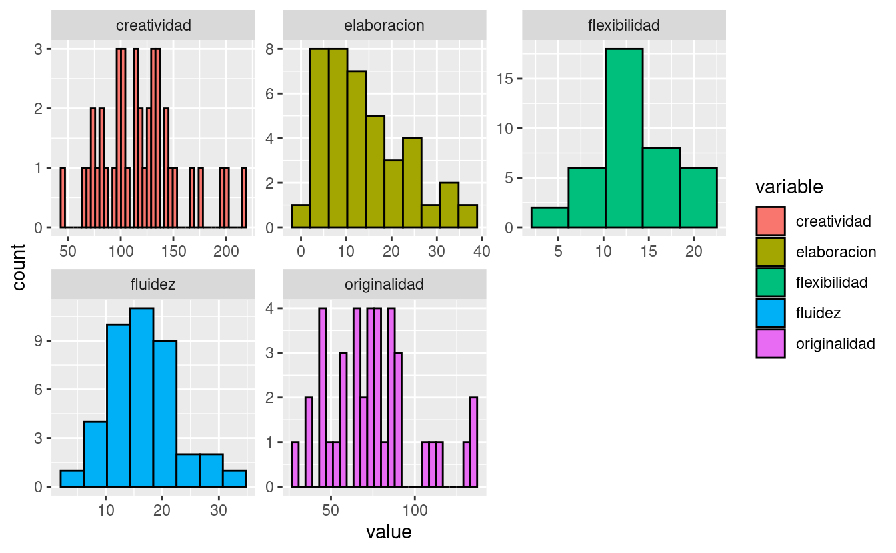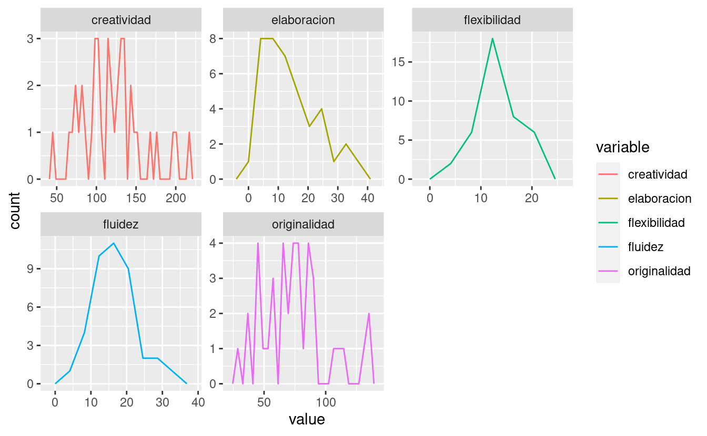
Temperament Dimensions
#> # A tibble: 17 × 10
#> skim_type var mean sd p0 p25 p50 p75 p100 hist
#> <chr> <chr> <dbl> <dbl> <dbl> <dbl> <dbl> <dbl> <dbl> <chr>
#> 1 numeric act 4.72 0.756 3.31 4.15 4.69 5.15 6.54 ▂▆▇▂▂
#> 2 numeric fru 4.20 0.875 2.15 3.62 4.23 4.88 6.15 ▂▆▇▇▂
#> 3 numeric app 5.38 0.584 4.38 4.92 5.38 5.80 6.77 ▇▇▇▆▂
#> 4 numeric attfoc 4.56 0.603 3.33 4.17 4.44 5 5.78 ▂▇▇▅▃
#> 5 numeric attshi 4.46 0.747 3 4 4.6 4.9 5.8 ▂▆▇▅▃
#> 6 numeric attcon 4.50 0.567 3.57 4.14 4.43 4.79 5.71 ▃▇▆▁▃
#> 7 numeric dis 3.91 0.663 2.5 3.58 3.92 4.35 5 ▃▂▇▇▅
#> 8 numeric sth 4.71 0.698 3.31 4.38 4.67 5.15 6.31 ▃▇▇▅▂
#> 9 numeric fea 4.31 0.627 3 3.92 4.25 4.75 5.5 ▂▃▇▃▃
#> 10 numeric hip 4.94 0.751 3.46 4.46 5 5.42 6.38 ▃▅▇▅▃
#> 11 numeric imp 4.53 0.412 3.77 4.31 4.54 4.76 5.38 ▅▆▇▃▃
#> 12 numeric inh 4.70 0.591 3.69 4.31 4.64 5.08 6.08 ▆▇▇▂▂
#> 13 numeric lip 5.23 0.486 4.15 4.92 5.23 5.54 6.33 ▂▅▇▅▂
#> 14 numeric per 5.09 0.427 4.33 4.83 5.08 5.42 6.18 ▅▇▇▅▁
#> 15 numeric sad 4.17 0.806 2.25 3.5 4.33 4.71 5.83 ▂▅▃▇▂
#> 16 numeric shy 3.36 1.09 1.23 2.5 3.38 4.12 6.31 ▂▇▆▂▁
#> 17 numeric smi 5.18 0.563 4 4.85 5.08 5.69 6.15 ▂▅▇▃▆
 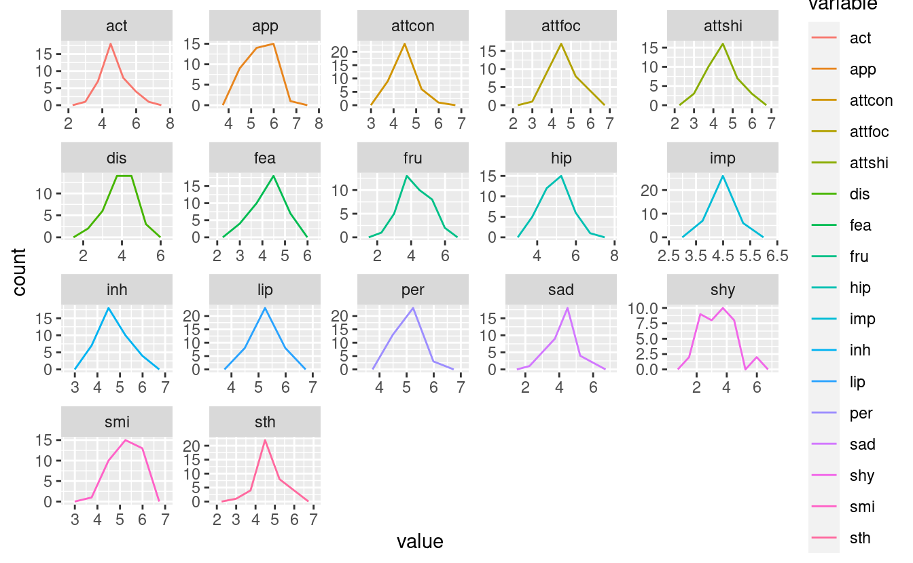
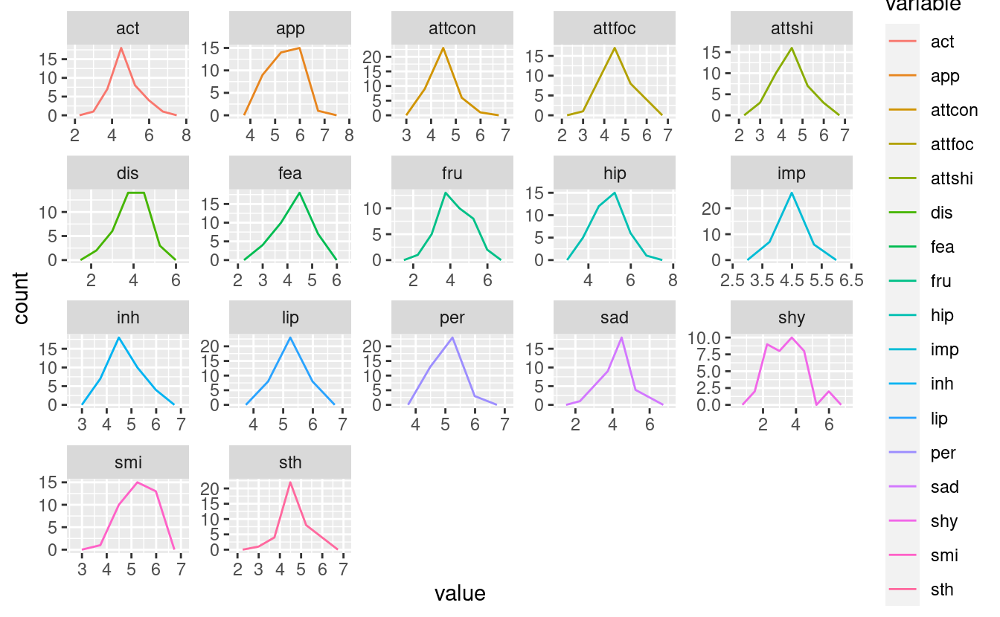
Temperament Broad Dimensions
#> # A tibble: 3 × 10
#> skim_type var mean sd p0 p25 p50 p75 p100 hist
#> <chr> <chr> <dbl> <dbl> <dbl> <dbl> <dbl> <dbl> <dbl> <chr>
#> 1 numeric CE 4.76 0.387 4.16 4.47 4.67 5.03 5.66 ▅▇▅▂▂
#> 2 numeric AN 4.26 0.375 3.28 3.99 4.31 4.50 4.94 ▁▃▇▇▅
#> 3 numeric SU 4.69 0.299 4.22 4.47 4.67 4.89 5.23 ▆▇▆▇▃ 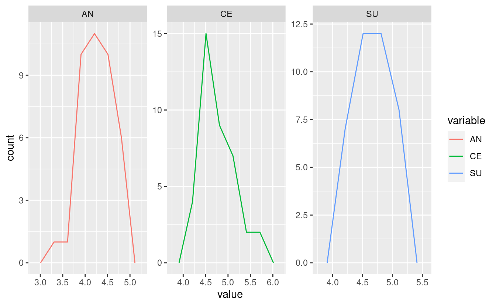
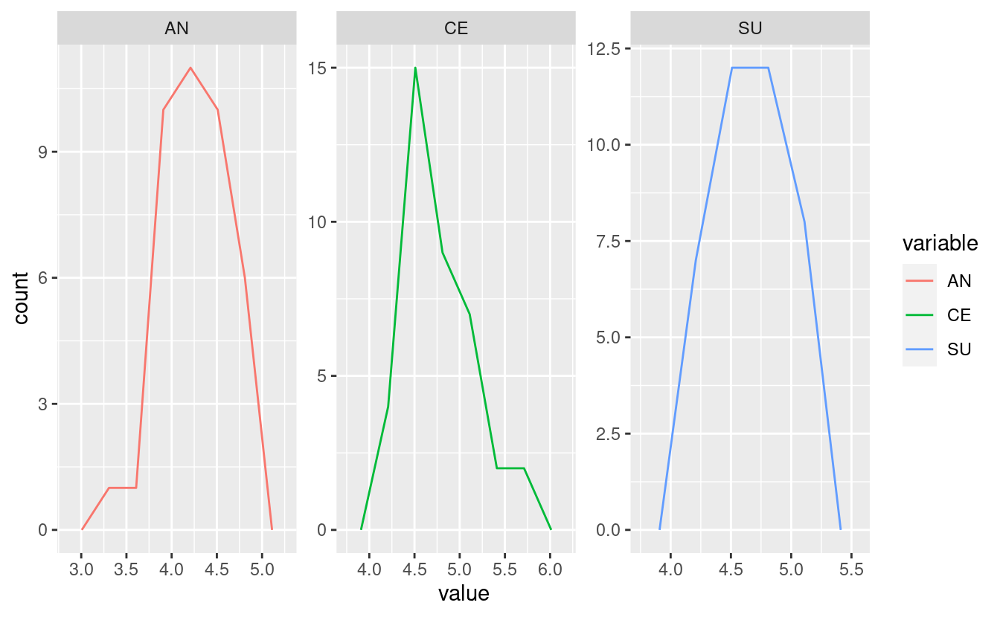
Raven
#> # A tibble: 6 × 10
#> skim_type var mean sd p0 p25 p50 p75 p100 hist
#> <chr> <chr> <dbl> <dbl> <dbl> <dbl> <dbl> <dbl> <dbl> <chr>
#> 1 numeric percentil 53.6 23.3 5 50 50 75 95 ▂▃▇▇▁
#> 2 numeric rango 2.83 0.940 1 2 3 3 5 ▁▇▇▃▁
#> 3 numeric columna_a 8 1.37 5 7 8 9 10 ▅▅▅▇▃
#> 4 numeric columna_ab 6.94 2.31 2 5 7 9 11 ▂▃▅▇▂
#> 5 numeric columna_b 5.09 1.50 1 4 5 6 9 ▁▇▇▇▂
#> 6 numeric puntaje 20.2 3.74 11 18 20 23 29 ▂▆▇▆▂ 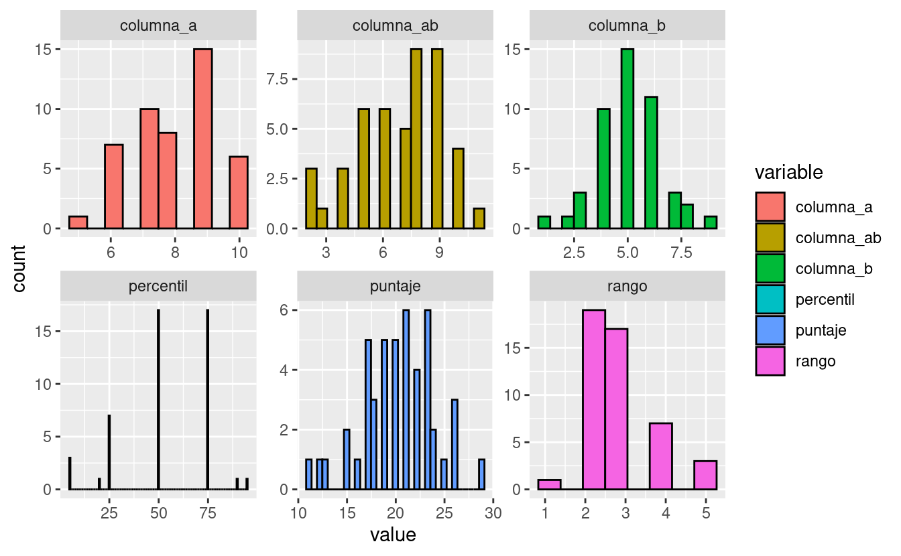
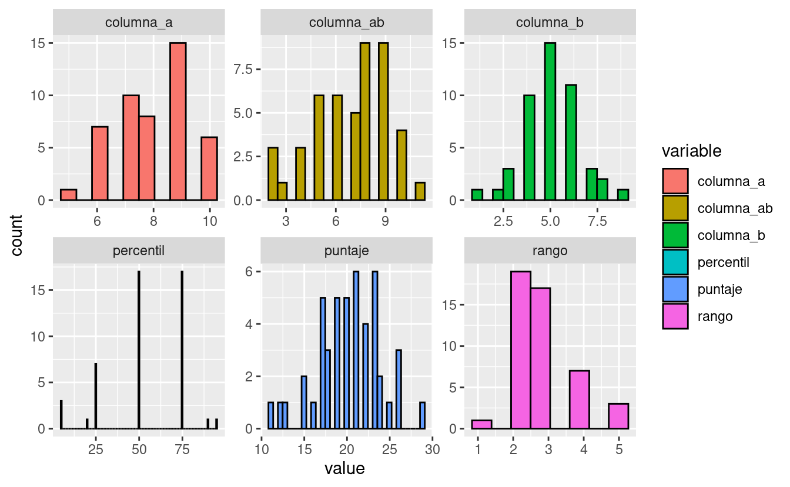